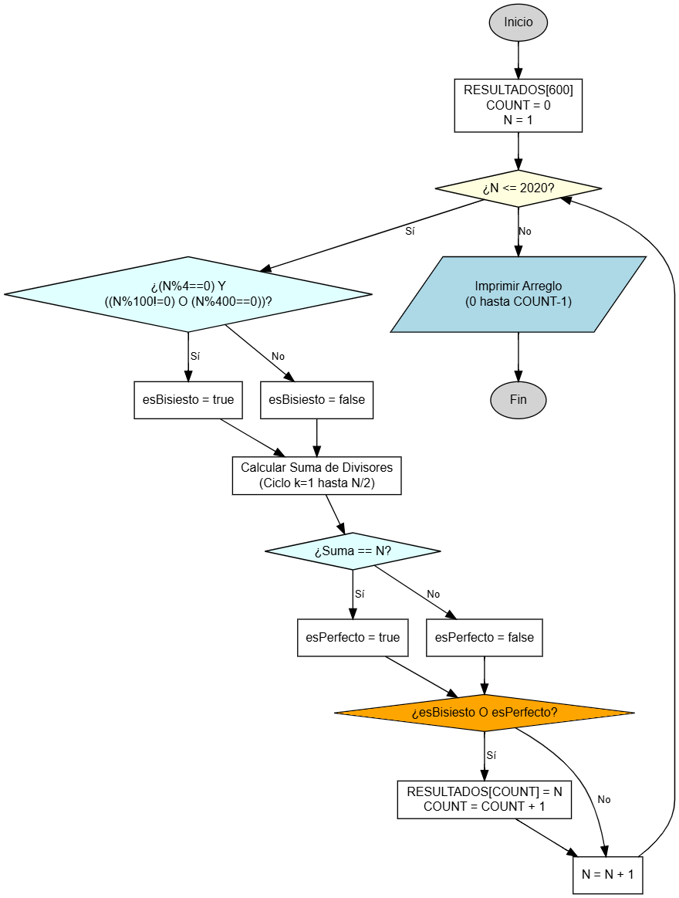

Filtrado Numérico Complejo
Lógica matemática y almacenamiento.
Este problema es un reto interesante porque debes filtrar una secuencia de números (del 1 al 2020) basándote en dos criterios matemáticos distintos: calendarios (años bisiestos) y teoría de números (números perfectos). Los que cumplan cualquiera de las dos condiciones deben guardarse en una lista.

Objetivo
Construir un programa que analice todos los números entre el 1 y el 2020. Debe identificar y almacenar en un arreglo unidimensional aquellos números que sean Bisiestos O Perfectos. Al finalizar el análisis, debe imprimir el contenido del arreglo.
Definiciones Matemáticas
- Año Bisiesto: Es divisible entre 4, pero NO es divisible entre 100, a menos que también sea divisible entre 400.
- Número Perfecto: Es aquel que es igual a la suma de sus divisores positivos (excluyéndose a sí mismo).
Ejemplo: El 6 es perfecto porque sus divisores son 1, 2 y 3, y 1+2+3 = 6.
Variables a Declarar
- RESULTADOS: Arreglo unidimensional de enteros (
int[]). Dado que no sabemos cuántos serán, define un tamaño seguro (ej. 600 posiciones). - COUNT: tipo entero (
int) - Índice para controlar en qué posición del arreglo guardamos el siguiente número encontrado. - SUMA: tipo entero (
int) - Variable auxiliar para sumar los divisores al verificar si es perfecto.
Operaciones a Realizar
- Inicializar el contador
COUNT = 0. - Iniciar un ciclo desde
N = 1hasta2020. - En cada vuelta, verificar dos condiciones:
- ¿Es Bisiesto?:
(N % 4 == 0) && (N % 100 != 0 || N % 400 == 0) - ¿Es Perfecto?: Calcular la suma de sus divisores (bucle interno) y ver si
SUMA == N.
- ¿Es Bisiesto?:
- Si se cumple cualquiera de las dos (OR), guardar
NenRESULTADOS[COUNT]e incrementarCOUNT. - Al terminar el ciclo principal, imprimir el arreglo (solo las posiciones llenas, de 0 a
COUNT-1).
Resultado Esperado (Fragmento)
--- Analisis completado --- Numeros encontrados (Bisiestos o Perfectos): 4 6 8 12 16 20 ... 2016 2020